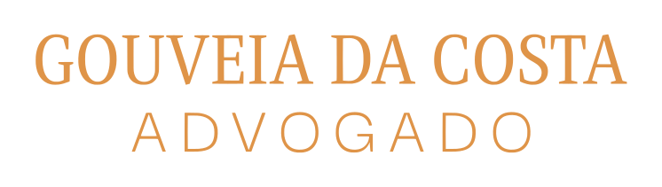

Gouveia da Costa, Advogado
DescerPerfil
Gouveia da Costa é advogado, licenciado em Direito pela Faculdade de Direito da Universidade de Coimbra, e exerce advocacia em Faro, onde acompanha particulares e empresas em consultoria jurídica e contencioso.
Segue pessoalmente cada assunto que lhe é confiado, do primeiro contacto à sua resolução final. Privilegia uma análise rigorosa, uma comunicação clara e uma estratégia ajustada aos objetivos de cada cliente — seja na prevenção de litígios, na negociação ou na defesa em tribunal.
Áreas de Atividade
Direito Civil
Contratos, responsabilidade civil, obrigações e cobrança de dívidas.
Direito da Família
Divórcios, responsabilidades parentais, alimentos e partilhas.
Sucessões
Testamentos, habilitação de herdeiros, inventários e partilhas.
Direito Imobiliário
Compra e venda, arrendamento, condomínio e registos prediais.
Direito Comercial
Constituição de sociedades, contratos comerciais e apoio a empresas.
Direito do Trabalho
Contratos de trabalho, despedimentos e litígios laborais.
Contactos
- Morada
-
Avenida 5 de Outubro, 17
Faro
Ver no mapa - Telefone
- +351 289 374 650
- Horário
- Segunda a Sexta
9h00 – 18h00